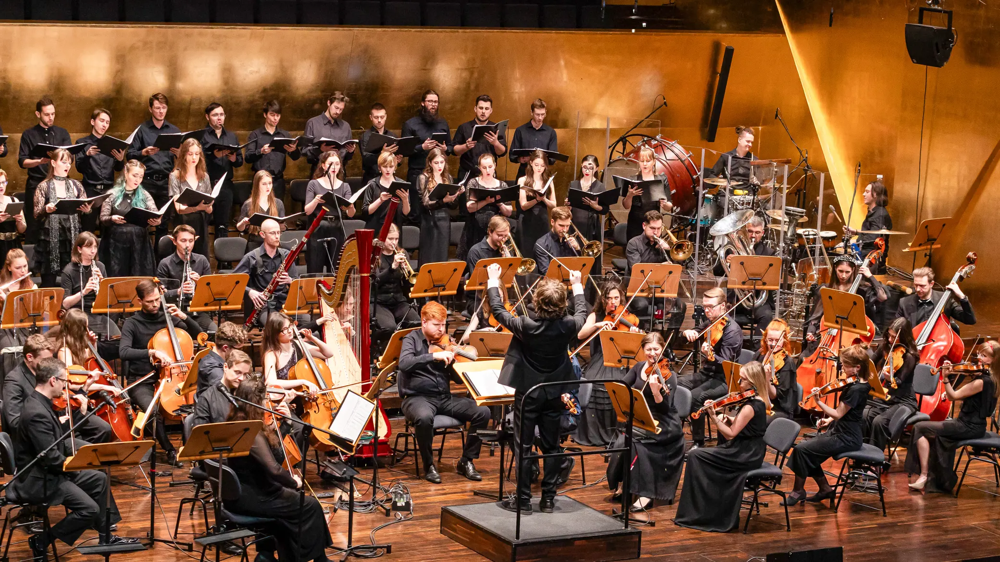
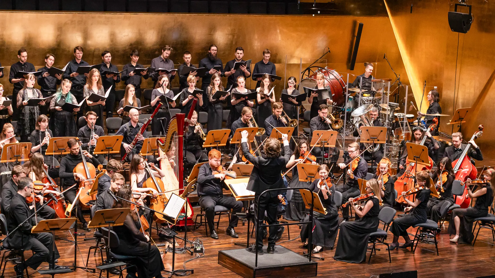

Paul Anthony Romero is the practiced prodigy who has developed the timeless music from the Heroes of Might and Magic series. Him and Rob King get to hold the honor of having worked on every single Heroes game, and many of the Might and Magic series, having more of those titles under their belt than even the creator of the series, Jon Van Canegham. Mr. Romero got his start very early, with some sources saying he started playing the piano as early as 3 years old. He began formal training at 9 and had his concert debut at 11. He composed and performed his first concerto at 13. His work on the Heroes series has received so much acclaim that by popular request, he formed the Heroes Orchestra. According to an interview he just “ran into” Rob King at a party, got to talking about the project, and then King asked him to come into the studio and perform a couple pieces. After performing a couple pieces, King asked if he could compose music for the game in the Baroque style, with a 1 week deadline for $400. Romero said yes, and we now get to enjoy his excellent music in every single iteration, including the upcoming Olden Era.